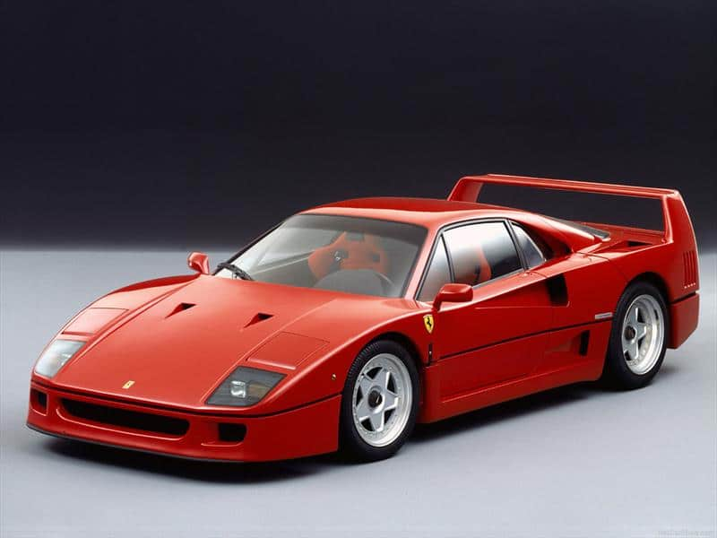

Autos clásicos

Historia automotriz
Los autos clásicos representan diferentes épocas de la industria automotriz y son valorados por su historia y diseño.
Conservación
Muchos propietarios restauran estos vehículos para conservar sus piezas, apariencia y características originales.
Comparación de autos clásicos
| Tipo | Época | Característica principal |
|---|---|---|
| Muscle car | Décadas de 1960 y 1970 | Motor potente y carrocería deportiva |
| Sedán clásico | Décadas de 1950 y 1960 | Diseño elegante y amplio espacio |
| Deportivo clásico | Décadas de 1970 y 1980 | Bajo peso y buen rendimiento |